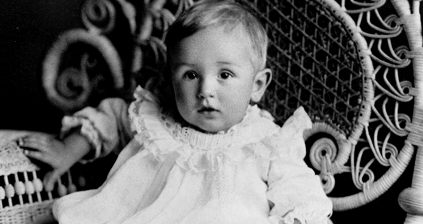

УОЛТ ДИСНЕЙ: БИОГРАФИЯ И ЛИЧНАЯ ЖИЗНЬ
Имя Уолта Диснея широко известно как взрослым, так и детям. На мультфильмах его студии воспитывалось не одно поколение современных людей. Однако мало кому известно, что этому человеку пришлось вынести немало жизненных испытаний, прежде чем сделать себе имя и заняться любимым делом.
Детские годы
Будущий художник-мультипликатор, произведения которого погружали детей в сказочный мир, населенный удивительными созданиями, провел весьма безрадостное детство. Он родился в 1901 году в скромной небогатой семье, был одним из пяти детей в семействе Диснеев. Родителями были плотник и школьная учительница. Первые годы Уолтера прошли в неспокойном Чикаго, жизнь которого бурлила криминальными страстями. Когда герою материала было всего 4 года, родители приняли решение о переезде в более спокойный городок Марселин, где проживал брат отца.
Семья приобрела небольшую ферму и жила очень скромно. Так, Уолтер не имел ни бумаги, ни карандашей, чтобы заниматься рисованием. А меж тем в его душе уже начала формироваться великая мечта, которая впоследствии будет вести его вперед и не давать опускать руки, несмотря на все сложности. Он мечтал стать художником.

Первые трудности и победы
Мальчик отличался не только дружелюбным веселым нравом, отчего его любили все соседи, но и рано проявившимся талантом к рисованию. Известен факт из биографии Уолта Диснея – один из его соседей купил рисунок лошади юного художника, что и подарило ему веру в успех. Однако до исполнения мечты оставалось еще много времени.
В 8 лет мальчик получил первую работу – разносчика писем, поэтому смог сам добывать на карманные расходы. Строгий отец забирал все заработанное сыном, но предприимчивый Уолтер нашел выход – он стал брать больше работы и трудиться усерднее, поэтому часть денег скрывал от родителя.
Позднее семья вновь сменила место жительства, перебравшись в Канзас-Сити. Именно здесь маленький Дисней увидел роскошный особняк, который представлялся его детским сознанием волшебным замком. Ребенок решил, что когда-нибудь сможет построить такой же и сделать его доступным детям со всего мира. Биография Уолта Диснея свидетельствует о том, что мечта эта сбудется – ему удастся основать Диснейленд, попасть в который жаждет каждый ребенок.
Первый успех
Для детей в биографии Уолта Диснея следует обязательно упомянуть, что неудачи его не сломили. В 1923 году он оправляется в Голливуд, имея при себе весьма скромный капитал, где открывает небольшую анимационную студию. Партнером Уолта стал его родной брат Рой.
В 1924 году появляется первое творение новой студии «День Алисы на море», созданный по мотивам бессмертного произведения Льюиса Кэрролла. В 20-ые годы прошлого столетия Дисней трудился и над другими фильмами про Алису.
В этот же время он связал свою судьбу с Лилиан Баундс, которая трудилась на студии ассистенткой.
Новые персонажи и успех
Биография Уолта Диснея этого периода полна увлекательных событий. В 1927 году свет увидел «Кролик Освальд». Именно он и принес студии Диснея популярность и успех. Потом появились всем известные персонажи:
- Микки Маус. Справедливость требует указать, что создан он не столько самим Диснеем, сколько Абом Айверксом, компаньоном Уолтера. Дебютом знаменитой мыши является фильм «Безумный аэроплан», пока немой. Позднее, когда стало возможным делать картины со звуком, Дисней подарил персонажу свой голос и озвучивал его в нескольких лентах.
- Плуто появился в 1930 году. В большинстве лент является домашним псом Микки Мауса, однако в некоторых картинах носит характер самостоятельного персонажа. Отличительная особенность героя – он не наделен человеческими качествами и ведет себя как обычный пес.
- Гуффи появился через два года в 1932 году. Этот пес не похож на Плуто, он ведет себя как человек: является другом Микки Мауса, отличается добродушием и веселым нравом. Очень часто Гуффи попадает в нелепые ситуации, из которых ловко выкручивается благодаря жизнелюбию и оптимизму.
- Дональд Дак был создан в 1934 году. Этот селезень стал средоточием отрицательных качеств, которые, как полагал мультипликатор, уже нельзя было добавить в образ Микки Мауса.
Первые полнометражки
В 1934 году в биографии Уолта Диснея наступает важный момент – он приступает к созданию полнометражного мультипликационного фильма «Белоснежка и семь гномов». Вместе с ним работой были заняты и другие художники. К 1937 году фильм был готов. Картина обошлась ее создателю почти в полтора миллиона долларов, что было по тем временам астрономической суммой. Однако результат был фантастическим – мультфильм оценили и зрители, и кинокритики. В 1939 году Дисней получил за него престижную премию «Оскар». Причем, помимо традиционной большой статуэтки мультипликатору вручили 7 маленьких, по количеству гномов.
В 1940 году свет увидела еще одна полнометражка «Пиноккио» – сказка о мальчике, нос которого начинал расти, стоило ему соврать. Работа велась напряженно, известно, что для реалистичности сцены с китом художникам пришлось некоторое время понаблюдать за поведением этих подводных жителей. Картина получила сразу два «Оскара».
Первый Диснейленд
Из биографии Уолта Диснея на английском с переводом можно узнать, что он открыл свой первый Диснейленд, настоящий рай для детей всех возрастов, в 1955 году. Это был фантастический парк развлечений, посетители которого могли попасть в дикие джунгли или в подводное царство.
На возведение этого шедевра архитектуры и техники было потрачено более 15 млн. долларов. Но затраты окупились со стремительной скоростью, поскольку Диснейленд быстро стал чуть ли не самым популярным местом семейного отдыха в США.
Перевоплощение в продюсера
Фото и биография Уолта Диснея свидетельствуют о том, что это был незаурядный человек. Достигнув небывалых успехов в мультипликации, он не остановился и продолжал творить. В качестве продюсера он снял ряд цветных лент о природе, желая воспитать в зрителях стремление к охране ее ценностей.
Известны также приключенческие ленты Диснея:
- «Остров сокровищ»
- «Мэри Поппинс»
- «Робин Гуд»
В создании каждой картины он принимал самое непосредственное участие, поэтому все они несут в себе отпечаток его яркой оригинальной личности.
Несколько интересных фактов
Каждый желающий может ознакомиться с биографией на английском Уолта Диснея и узнать об этом человеке множество подробностей. Тем же, у кого такой возможности нет, предлагаем познакомиться с подборкой малоизвестных фактов:
- Не все знают, что целеустремленный юноша пробовал себя в актерском искусстве и даже сыграл в массовке, но очень быстро разочаровался в работе.
- Профессию актера Уолту пророчили его первые учителя и друзья детства, поскольку мальчик очень талантливо изображал походку популярного в те времена Чарли Чаплина. Но судьба нашего героя сложилась иначе.
- Супруга Диснея Лилиан первое время была его ассистенткой. И даже отказывалась от своего гонорара ради успехов студии.
- Фильмы и биография Уолта Диснея говорят о том, что это человек умел рисковать и отстаивать свою точку зрения. Известен факт: когда Дисней собирался работать над первым полнометражным фильмом, его брат Рой, узнав о стоимости картины, едва не лишился чувств. Компания оказалась на грани банкротства, но на помощь пришел один из банков, владелец которого оказался большим поклонником творчества студии.
- «Триумф американского воображения», биография Уолта Диснея, созданная Нилом Геблером, ярко описывает незаурядную личность человека, который сумел пройти непростой путь от скромного жителя американской глубинки до всемирно известного художника-мультипликатора, продюсера, сценариста и режиссера. К сожалению, на русский язык книга пока не переводилась.